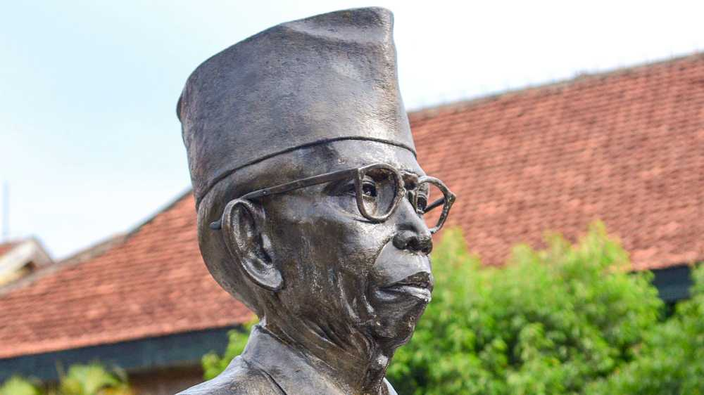
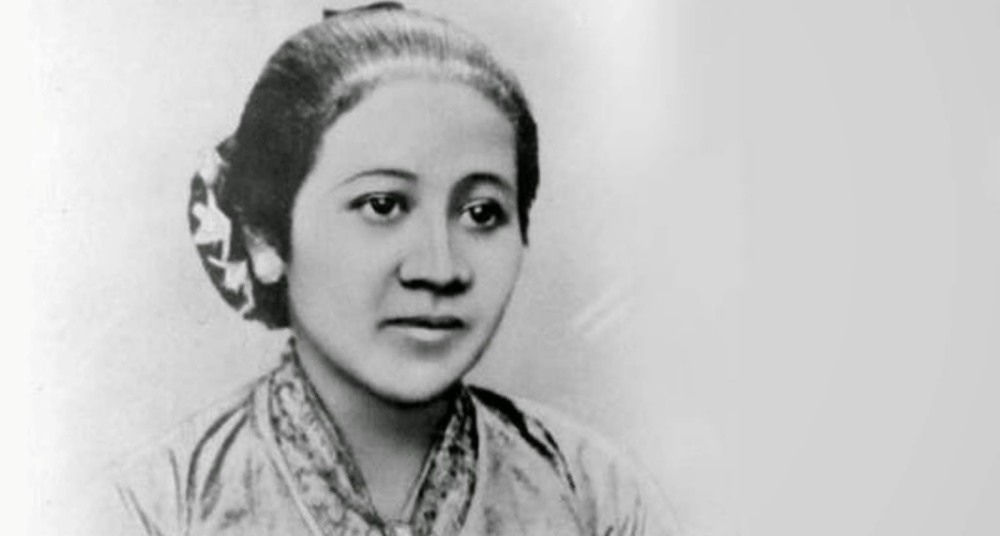
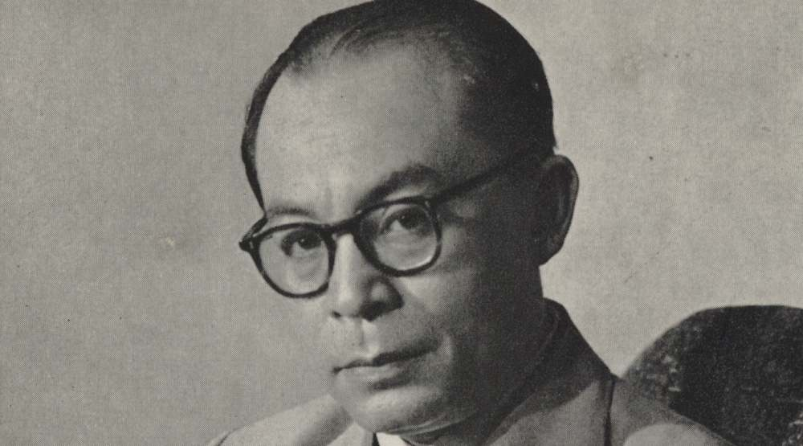

Berbicara tentang pahlawan kemerdekaan nasional Indonesia tidak bisa dilakukan tanpa sang proklamator kemerdekaan itu sendiri, yaitu Ir. Soekarno yang berasal dari Surabaya. Ir. Soekarno adalah presiden pertama Indonesia yang juga berperan sebagai pencetus dasar negara Pancasila yang kita gunakan hingga saat ini. Bersama dengan Mohammad Hatta, Soekarno merupakan tokoh penting yang telah menginspirasi masyarakat Indonesia dalam perjuangan mencapai gerbang kemerdekaan.
Ki Hadjar Dewantara merupakan pahlawan nasional lainnya yang berasal dari Yogyakarta. Raden Mas Soewardi Soerjaningrat atau yang lebih dikenal dengan Ki Hadjar Dewantara merupakan salah satu aktivis pergerakan kemerdekaan. Sepanjang hidupnya, Ki Hadjar Dewantara telah berperan besar dalam pendidikan Indoensia. Perguruan Taman Siswa adalah salah satu hasil jerih payahnya dalam memberikan kesempatan pendidikan bagi kaum pribumi Indonesia yang waktu itu hanya bisa dinikmati oleh masyarakat Belanda dan kalangan elit saja.
Belum afdol rasanya jika belum membahas pahlawan nasional wanita yang juga berkontribusi besar dalam memperjuangkan kemerdekaan Indonesia dan juga kaum perempuan. Pahlawan nasional tersebut adalah R.A. Kartini yang berasal dari Jepara, Jawa Tengah. Sebagai salah satu pahlawan wanita, Raden Adjeng Kartini telah berjasa dalam memperjuangkan kesetaraan hak kaum perempuan semasa hidupnya. Latar belakang bangsawan tidak lantas membuatnya tunduk kepada para penguasa dan nilai-nilai mereka yang konservatif. Kartini justru dinilai telah mempelopori bangkitnya perempuan pribumi dengan pemikirannya yang lebih moderat.
Mohammad Hatta atau yang biasa dikenal sebagai Bung Hatta adalah salah seorang pahlawan nasional yang berperan besar dalam proklamasi kemerdekaan Indonesia. Ia merupakan salah satu pahlawan nasional yang berasal dari Bukittinggi, Sumatra Barat. Semangat patriotisme Bung Hatta telah tumbuh sejak ia masih muda dengan partisipasinya sebagai aktivis, anggota dari organisasi pergerakan nasional hingga menjadi negarawan yang turut mendampingi Soekarno untuk memperjuangkan Indonesia dari penjajahan Belanda.